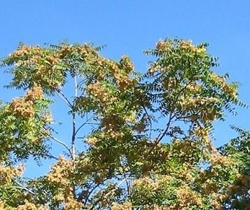

Woher kommt der Name Götterbaum?
  Der Götterbaum wächst in China oft schneller und höher als in Europa.
Der Götterbaum wächst in China oft schneller und höher als in Europa.
Weil er in den Himmel zu wachsen scheint, wird er Götterbaum oder auch Himmelsbaum genannt.
Auf Englisch heißt der Götterbaum
Tree of Heaven.